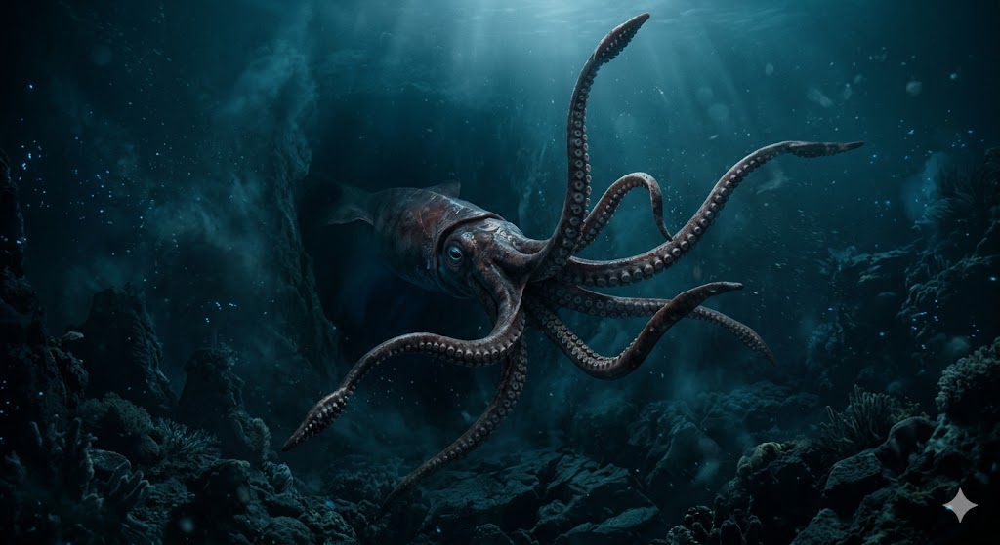
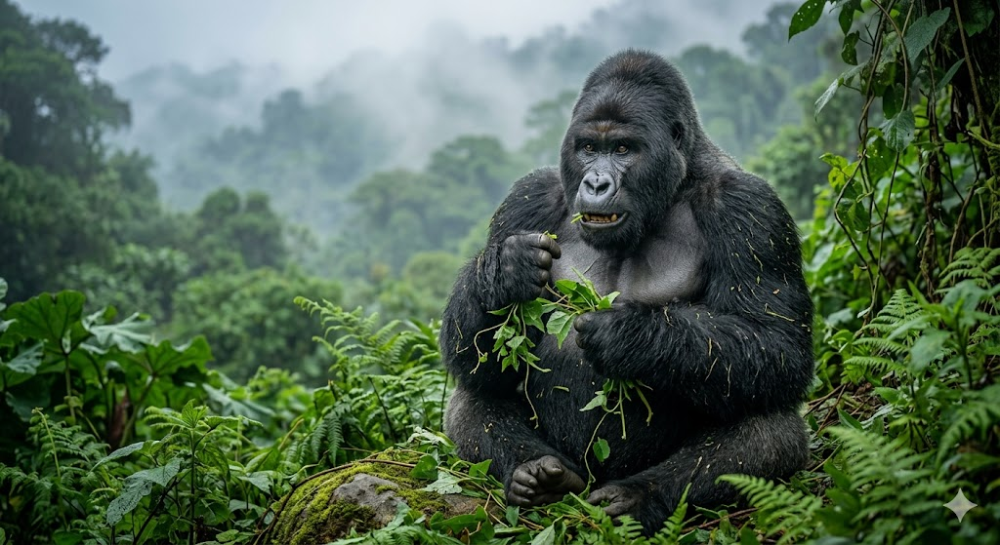
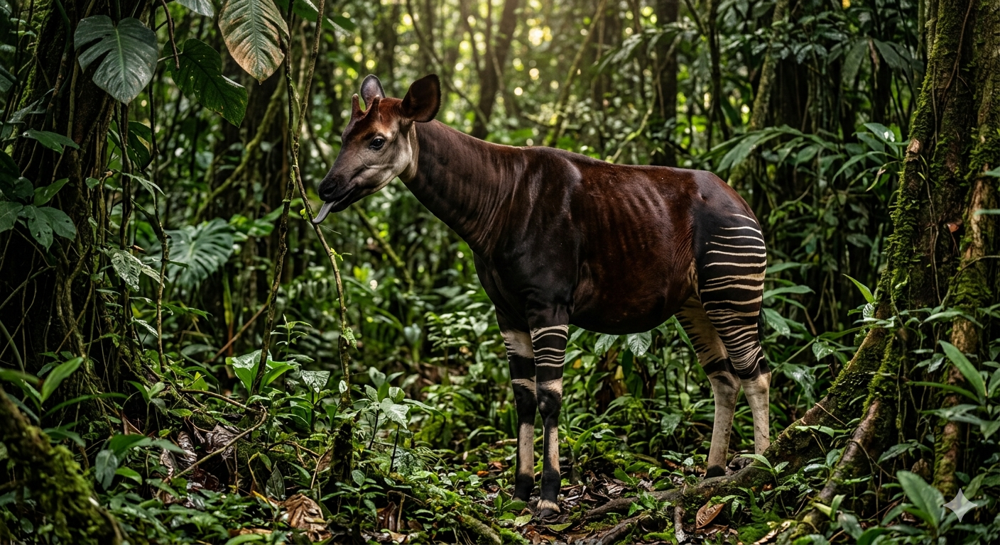
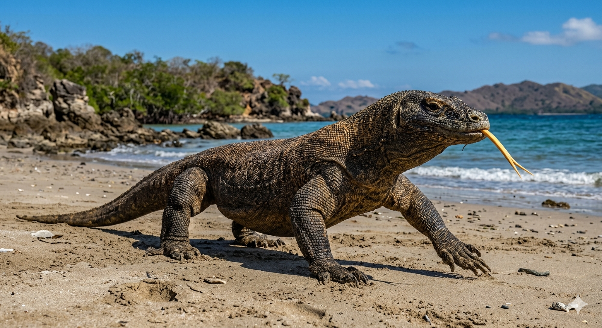
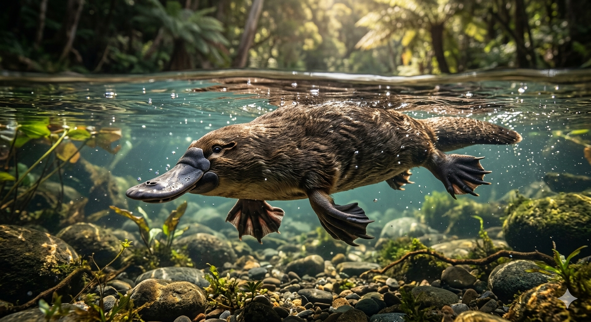
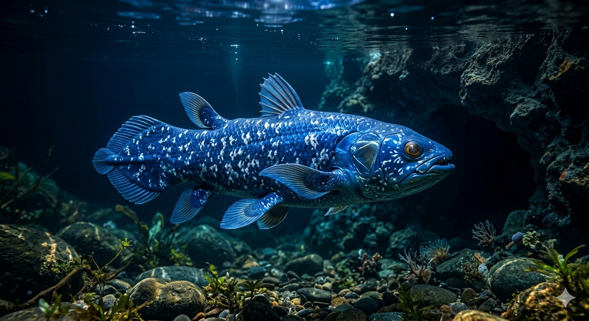

כשפולקלור פוגש זואולוגיה
במשך מאות שנים סופרו צ'יזבטים ואגדות עם על יצורים מפלצתיים ופלאיים. מלחים תיארו מפלצות ים, וחוקרים דיברו על חדי-קרן ביערות העד. כאן נחקור את אותם יצורים אגדיים שהמדע הוכיח את קיומם.

הדיונון הענק
מיתוס: הקראקן האימתני
היצור המיתולוגי שהטביע ספינות שלמות לפי אגדות נורדיות, התגלה כמפלצת מעמקים אמיתית.

גורילת ההרים
מיתוס: מפלצת האדם-קוף
סיפורי האימה על מפלצות צמאות דם שחוטפות בני אדם, התנפצו כשהתגלה אחד היצורים העדינים והאינטליגנטיים בטבע.

האוקאפי
מיתוס: החד-קרן האפריקאי
שמועות על חיה מסתורית חצי זברה וחצי ג'ירפה ביערות קונגו שהתבררו כתגלית זואולוגית מרעישה.

דרקון קומודו
מיתוס: תנין יבשה מפלצתי
אגדות יורדי הים על אי שורץ בלטאות ענק טורפות התבררו כאמת. הכירו את הלטאה הגדולה (והארסית) בעולם.

הברווזן
מיתוס: מתיחת הפוחלץ
היונק מטיל הביצים ששבר את כל חוקי הביולוגיה, וגרם למדענים בכירים להאמין שמדובר במתיחה.

הצילקנת
מיתוס: הכחדה פרהיסטורית
הדג שהמדע היה משוכנע שנכחד יחד עם הדינוזאורים לפני 66 מיליון שנה, ונמשה חי ממעמקי האוקיינוס.